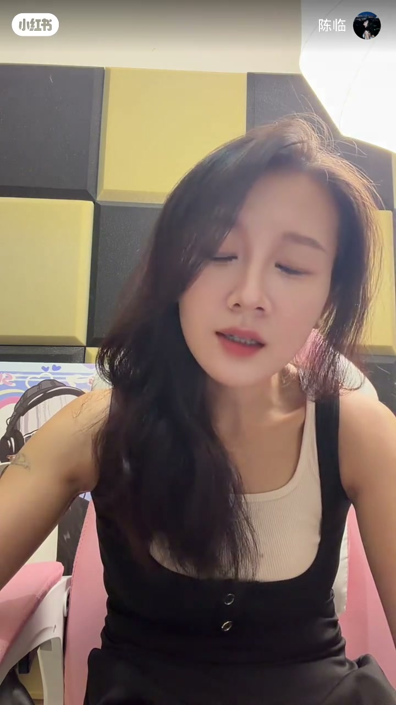
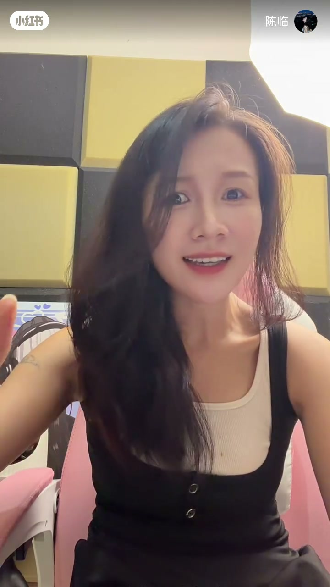
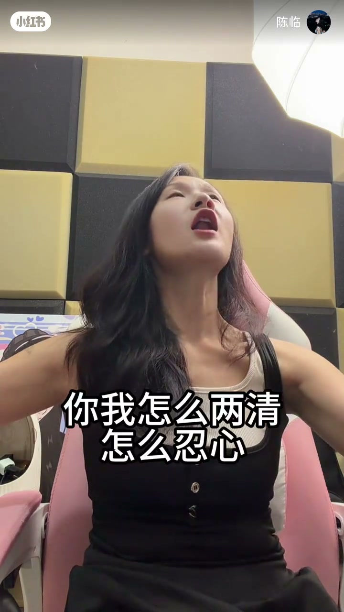
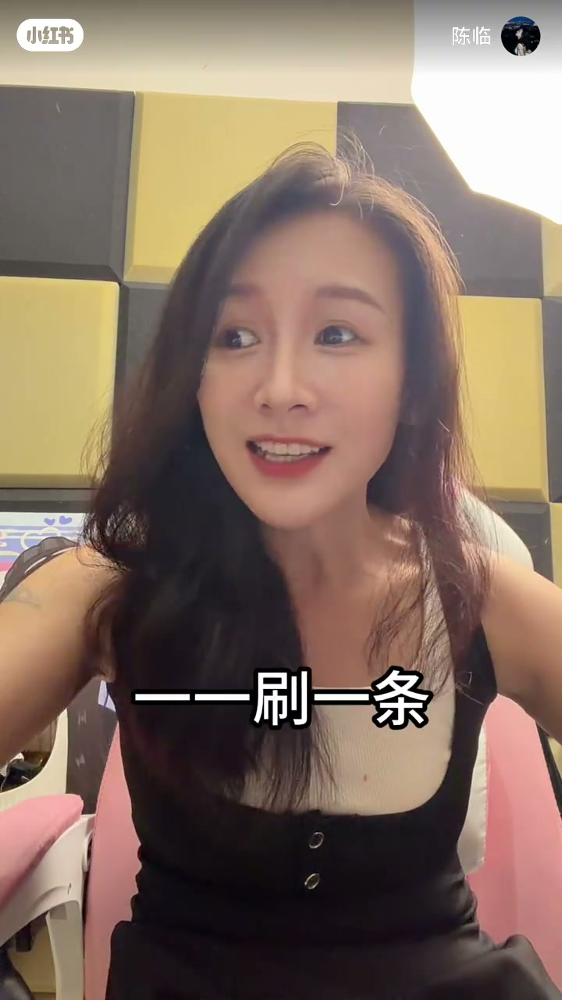

内容要点
知识结构
[00:00→00:30]
点题
怎么说话怎么唱歌——自然连接说与唱。
[00:30→01:00]
示范演唱
以开口演唱示范「自然去唱」的状态。
[01:00→01:28]
激励收束
文案强调一定要开口，跟练比等课更重要。
总结
技巧课可以暂停，开口练习不能停；说与唱用同一套自然状态。
图文实录
说与唱同一套
00:00 – 00:30
开场口播点题「怎么说话怎么唱歌」，把歌唱从「表演腔」拉回说话状态。
怎么说话怎么唱歌啊

[00:11]点题：怎么说话怎么唱歌
Thesis: sing the way you speak
开口示范
00:30 – 01:00
中段以演唱示范代替长理论，呼应「自然去唱」。

[00:33]示范：用说话状态去唱
Demo: sing from a speaking state

[00:55]保持开口：状态比炫技优先
Keep opening the voice: state over showmanship
一定要开口
01:00 – 01:28
结合文案：更新暂停不重要，粉丝打卡打动老师；对观众的行动号召是持续开口。

[01:17]收束：一定要开口跟练
Close: you must open your mouth and practice